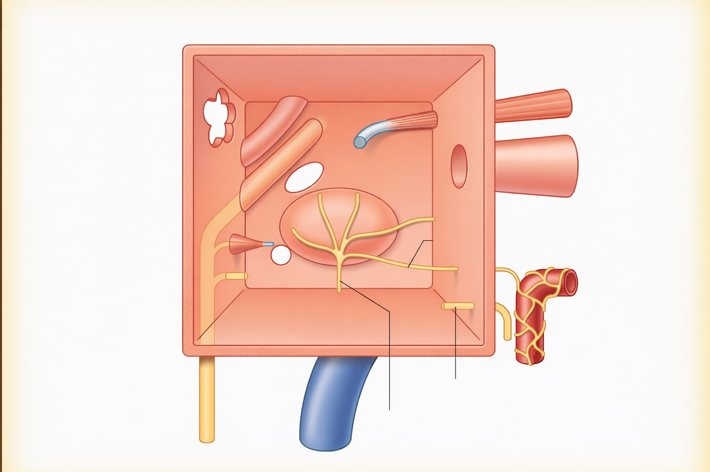
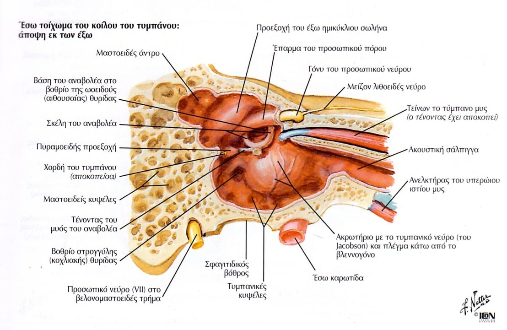
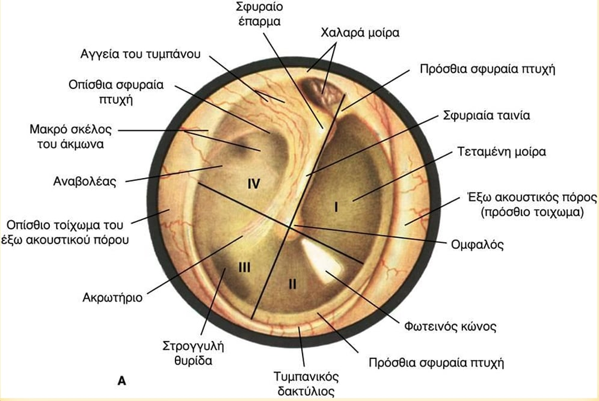
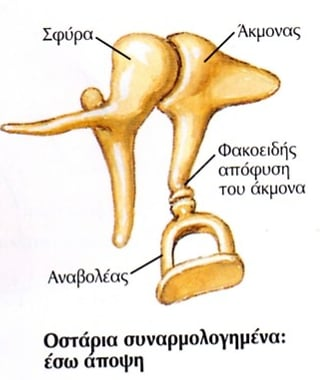
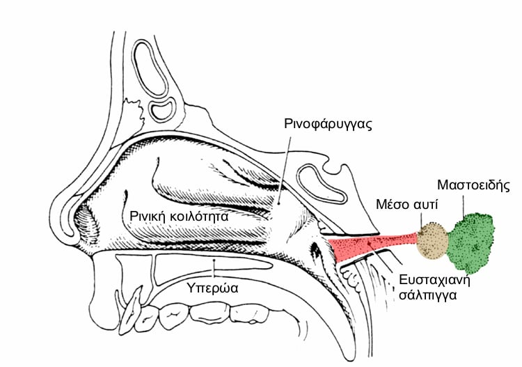
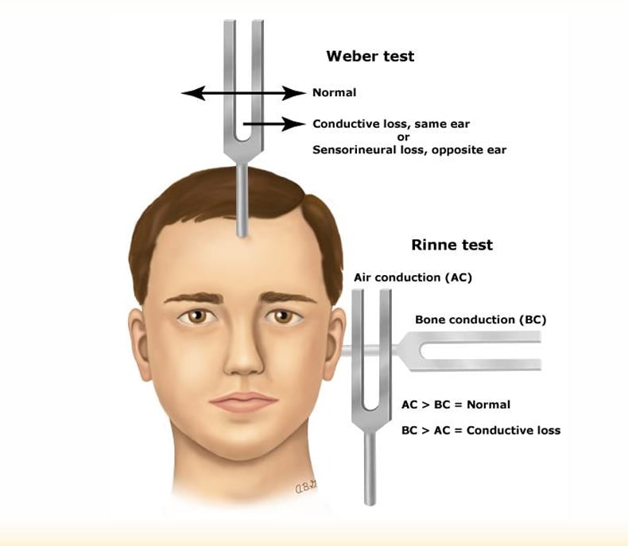

Αυτί – Τραυματισμοί, φλεγμονές, μέσο ους, βαρηκοΐα
Συγκεντρωμένες σημειώσεις για διάβασμα στην οθόνη και δυνατότητα εκτύπωσης.
1. Τραυματισμοί και φλεγμονές πτερυγίου
Τραυματισμοί
- Ανοικτοί τραυματισμοί
- Ωταιμάτωμα (“αυτί του boxer”): συλλογή αίματος μεταξύ χόνδρου και περιχονδρίου.
- Κρυοπαγήματα
- Εγκαύματα
Φλεγμονές πτερυγίου
- Περιχονδρίτιδα → φλεγμονή του πτερυγίου
- Ερυσίπελας → δερματική φλεγμονή
- ερυθρός + πέλλα = “κόκκινο δέρμα”
2. Φλεγμονές έξω ακουστικού πόρου
Εξωτερική ωτίτιδα
Περιγεγραμμένη εξωτερική ωτίτιδα
- Εντοπισμένη φλεγμονή του έξω ακουστικού πόρου.
- Λέγεται περιγεγραμμένη επειδή είναι σε ένα σημείο και όχι διάχυτη.
- Συνήθως από λοίμωξη θυλάκου τρίχας → δοθιήνας μέσα στον πόρο.
- Συχνότερο αίτιο: χρυσίζων σταφυλόκοκκος.
- ΚΕ: έντονος πόνος, ιδίως με έλξη πτερυγίου, τοπικό οίδημα, ερύθημα, μικρό απόστημα στο τοίχωμα.
Περιγεγραμμένη εξωτερική ωτίτιδα
Πιο συχνή μορφή
Διάχυτη εξωτερική ωτίτιδα
- Λέγεται και Swimmer’s ear.
- Φλεγμονή όλου του έξω ακουστικού πόρου.
- Η πιο συχνή μορφή.
- Κύρια αίτια: Pseudomonas aeruginosa και χρυσίζων σταφυλόκοκκος.
- ΚΕ: πόνος που χειροτερεύει με πίεση στον τράγο, οίδημα πόρου, κνησμός, ωτόρροια, μειωμένη ακοή.

Διάχυτη εξωτερική ωτίτιδα
Μυκητιασική λοίμωξη
Ωτομύκωση
- Μυκητιασική λοίμωξη του έξω ακουστικού πόρου.
- Συχνότεροι μικροοργανισμοί: Aspergillus και Candida.
- Ευνοείται από υγρασία, κολύμπι, παρατεταμένη χρήση αντιβιοτικών σταγόνων, χρόνιες εξωτερικές ωτίτιδες.
- ΚΕ: έντονος κνησμός, πληρότητα, χαρακτηριστική “βαμβακώδης” μαύρη ή λευκή έκκριση, ήπιος πόνος.

Ωτομύκωση
Μη λοιμώδες
Έκζεμα έξω ακουστικού πόρου
- Μη λοιμώδης φλεγμονή του δέρματος του πόρου.
- Συχνότερο σε άτομα με ατοπική δερματίτιδα, σμηγματορροϊκή δερματίτιδα ή ψωρίαση.
- ΚΕ: ξηρότητα, απολέπιση, κνησμός, ήπια ωτόρροια.
- Αν επιμολυνθεί, μπορεί να μοιάζει με διάχυτη εξωτερική ωτίτιδα.
Επείγον / high-yield
Κακοήθης εξωτερική ωτίτιδα
- Σοβαρή και δυνητικά θανατηφόρα φλεγμονή του έξω ακουστικού πόρου και των γύρω ιστών.
- Η λοίμωξη επεκτείνεται μέχρι τη βάση του κρανίου → οστεομυελίτιδα / οστεΐτιδα.
- Εμφανίζεται κυρίως σε ηλικιωμένους, διαβητικούς ή ανοσοκατεσταλμένους.
- Κύριο αίτιο: Pseudomonas aeruginosa.
- ΚΕ: βαθύς νυχτερινός πόνος, ωτόρροια, κοκκιώδης ιστός στον πόρο, πιθανή πάρεση προσωπικού νεύρου ή άλλων κρανιακών νεύρων.
Προσοχή: ο όρος “κακοήθης” εδώ δεν σημαίνει καρκίνος· σημαίνει ότι η νόσος είναι
επιθετική, καταστροφική και απειλητική.
Διάκριση:
Οστεομυελίτιδα = λοίμωξη του μυελού των οστών που επεκτείνεται προς τα έξω.
Οστεΐτιδα = λοίμωξη του φλοιώδους οστού και των γύρω μαλακών μορίων.
Οστεομυελίτιδα = λοίμωξη του μυελού των οστών που επεκτείνεται προς τα έξω.
Οστεΐτιδα = λοίμωξη του φλοιώδους οστού και των γύρω μαλακών μορίων.

Κακοήθης εξωτερική ωτίτιδα
3. Όγκοι έξω ωτός
Καλοήθεις
- Υπεροστώσεις
- Εξοστώσεις
Κακοήθεις
- Βασικοκυτταρικό καρκίνωμα (BCC)
- Καρκίνωμα από πλακώδες επιθήλιο
Ορισμοί:
Υπερόστωση = υπερβολική ανάπτυξη οστού.
Εξόστωση = εντοπισμένο οστικό εξόγκωμα που προβάλλει προς τα έξω από την επιφάνεια του οστού.
Υπερόστωση = υπερβολική ανάπτυξη οστού.
Εξόστωση = εντοπισμένο οστικό εξόγκωμα που προβάλλει προς τα έξω από την επιφάνεια του οστού.
4. Μέσο ους – βασικά ανατομικά στοιχεία
Τυμπανική κοιλότητα
- Κεντρική κοιλότητα του μέσου ωτός.
Τυμπανικός υμένας
- Βρίσκεται λοξά σε σχέση με τον έξω ακουστικό πόρο.
Ακουστικά οστάρια
- Βασικές δομές για τη μετάδοση του ήχου.
Ευσταχιανή σάλπιγγα
- Σημαντική για τον αερισμό και τη λειτουργία του μέσου ωτός.

Τυμπανική κοιλότητα

Τυμπανική κοιλότητα 2

Τυμπανικός υμένας

Ακουστικά οστάρια

Ευσταχιανή σάλπιγγα
5. Παθήσεις μέσου αυτιού
Βασικές κατηγορίες:
συγγενείς δυσπλασίες, τραυματισμοί, διαταραχές λειτουργίας ευσταχιανής σάλπιγγας, φλεγμονές.
Τραυματισμοί
- Περίπου 80% επουλώνονται αυτόματα.
- Οι επιμολύνσεις και οι μεγάλοι τραυματισμοί είναι δυσμενείς προγνωστικοί παράγοντες.
Συχνή εξέταση
Οξεία μέση ωτίτιδα
- ΚΕ: ωταλγία, πυρετός, ωτόρροια, ανησυχία, βαρηκοΐα.
- Στα παιδιά μπορεί να εκδηλωθεί μόνο με γενική ανησυχία ή κακουχία.
- Θερ: αντιβιοτικά, αναλγησία, το αυτί να μένει στεγνό, αποσυμφορητικά μύτης.
Επιπλοκές:
Ενδοκροταφικές: μαστοειδίτιδα, λαβυρινθίτιδα, παράλυση προσωπικού νεύρου.
Ενδοκρανιακές: θρομβοφλεβίτιδα σιγμοειδούς κόλπου, μηνιγγίτιδα, εγκεφαλικό απόστημα, επισκληρίδιο απόστημα.
Ενδοκροταφικές: μαστοειδίτιδα, λαβυρινθίτιδα, παράλυση προσωπικού νεύρου.
Ενδοκρανιακές: θρομβοφλεβίτιδα σιγμοειδούς κόλπου, μηνιγγίτιδα, εγκεφαλικό απόστημα, επισκληρίδιο απόστημα.
Πυώδης μέση ωτίτιδα
- Ξεχωριστή φλεγμονώδης οντότητα του μέσου ωτός.
Συχνή στα παιδιά
Εκκριτική μέση ωτίτιδα
- Παράγοντες που ευνοούν τη δημιουργία της:
- οξεία μέση ωτίτιδα,
- φλεγμονή ή αλλεργία βλεννογόνου μέσου ωτός,
- δυσλειτουργία ευσταχιανής σάλπιγγας.
- Αίτια δυσλειτουργίας ευσταχιανής:
- ανώμαλη ή ατελής ανάπτυξη,
- απόφραξη από υπερτροφία αδενοειδών εκβλαστήσεων,
- ανωμαλίες ή απόφραξη μύτης,
- υπερωιοσχιστία.
- Συνήθως στα παιδιά (70–80%).
- Συχνά έχει αυτόματη υποχώρηση.
- Μπορεί να παραμείνει για μήνες ή χρόνια.
- Προκαλεί βαρηκοΐα ως 30 dB HL.
- Αν το υγρό παραμείνει, προδιαθέτει σε επαναλαμβανόμενα επεισόδια οξείας μέσης ωτίτιδας.
- Αν δεν υποχωρεί → σωληνίσκοι αερισμού.
Χρόνια βλάβη
Χρόνια μέση ωτίτιδα (ΧΜΩ)
- Φλεγμονώδης πάθηση του μέσου ωτός που έχει προκαλέσει μόνιμες βλάβες στις ανατομικές δομές.
- Παραδείγματα βλαβών:
- διάτρηση τυμπανικού υμένα,
- ατελεκτασία τυμπανικού υμένα,
- τυμπανοσκλήρυνση,
- χολοστεάτωμα.
- ΚΕ: βαρηκοΐα, ωτόρροια.
- Θεραπεία ενεργού φλεγμονής: τακτικός καθαρισμός, στεγνό ους, σταγόνες (αντιβιοτικά + στεροειδή).
- Ανενεργή ΧΜΩ: δεν χρειάζεται αγωγή.
- Αν η διάτρηση δεν κλείνει μόνη της μετά από 2–3 μήνες ή προκαλεί συχνά επεισόδια μέσης ωτίτιδας, ωτόρροια ή βαρηκοΐα αγωγιμότητας → μυριγγοπλαστική.
Μυριγγοπλαστική = χειρουργική αποκατάσταση του τυμπανικού υμένα όταν υπάρχει διάτρηση.
Πολύ σημαντικό
Χολοστεάτωμα
- Επιδερμική δομή εντός της τυμπανομαστοειδικής κοιλότητας.
- Σχηματίζεται από πλακώδες επιθήλιο και αποεπιθηλιοποιημένη κερατίνη.
- Αναπτύσσεται ανεξάρτητα, όχι απαραίτητα λόγω λοίμωξης.
- Μπορεί να είναι συγγενές ή επίκτητο.
Άλλες παθήσεις μέσου ωτός
- Κοκκιωματώδεις νόσοι
- Όγκοι
6. Ωτοσκλήρυνση
High-yield
- Αντικατάσταση του σκληρού συμπαγούς οστού από σπογγώδες οστό (ωτοσπογγίωση).
- Συνήθως στη βάση του αναβολέα.
- ΚΕ: προοδευτική βαρηκοΐα αγωγιμότητας, δυνατότητα και νευροαισθητήριας βαρηκοΐας, εμβοές.
- Η αιτιολογία είναι άγνωστη.
- Υπάρχει κληρονομική προδιάθεση και συσχέτιση με την ιλαρά.
- Θερ: αναβολοτομή, αναβολεκτομή.

Ωτοσκλήρυνση
7. Βαρηκοΐα
Τύποι βαρηκοΐας
- Αγωγιμότητας
- Νευροαισθητήρια
- Μικτή

Weber test
Βήματα:
- Χτυπάμε τον τονοδότη σε οστέινη επιφάνεια (γόνατο/αγκώνα)
- Τον τοποθετούμε στο κέντρο του μετώπου του ασθενούς
- Ρωτάμε αν ακούγεται το ίδιο και στα δύο αυτιά ή καλύτερα σε ένα
Αποτελέσματα:
- Ίδιος ήχος → Φυσιολογική ακοή
- Ακούγεται καλύτερα δεξιά → Weber πλαγιάζει δεξιά
- Ακούγεται καλύτερα αριστερά → Weber πλαγιάζει αριστερά
- Πλαγιάζει στο πάσχον αυτί → Βαρηκοΐα αγωγιμότητας
- Πλαγιάζει στο υγιές αυτί → Νευροαισθητήρια βαρηκοΐα
Rinne test
Βήματα:
- Χτυπάμε τον τονοδότη σε αγκώνα ή γόνατο
- Τον τοποθετούμε μπροστά από το πτερύγιο (αεροαγωγή)
- Στη συνέχεια πίσω από τη μαστοειδή απόφυση (οστέινη αγωγή)
Αποτελέσματα:
- Ακούγεται καλύτερα μπροστά → Rinne (+) → φυσιολογική ή νευροαισθητήρια
- Ακούγεται καλύτερα πίσω → Rinne (−) → βαρηκοΐα αγωγιμότητας